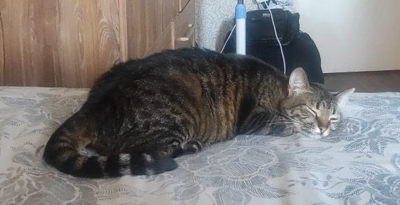
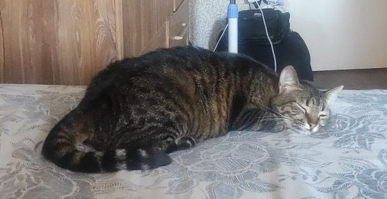

та собачку "Лапу"

Народився та проживаю в місті Черкаси. Сім'я не велика. Брат - Ігор, мама - Любов, батько - Борис.
Про всіх друзів не вийде написати, але скажу пару слів про друзів з якими я спілкуюсь вже дуже довго.
Друже Євгеній - харизматичний, добрий, справедливий. Знайомий ще зі школи, 6-7 клас.
Друже Роман - працьовитий, розумний, добрий. Знайомий ще з дитинства, багато чого пройшли разом.
Про інших, якщо цікаво, краще за чашкою кави чи чаю...
Маю двох домашніх улюбленців. Кицьку "Фросю"

та собачку "Лапу"